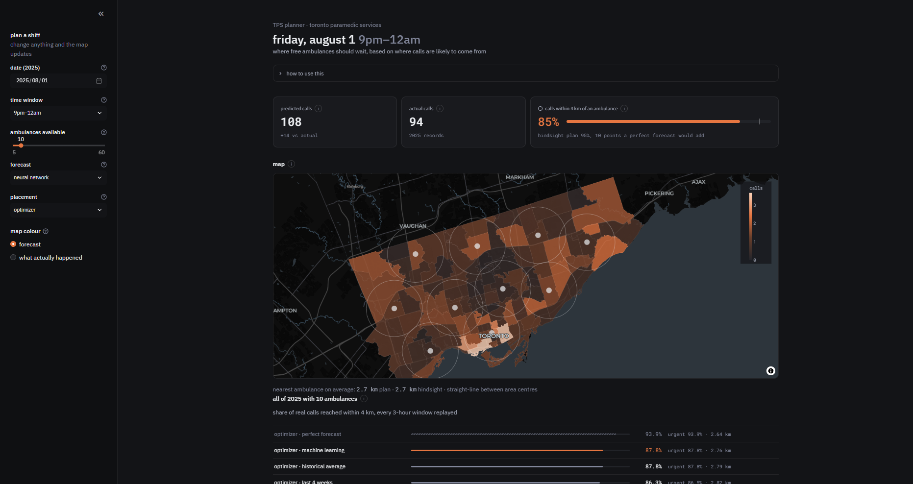
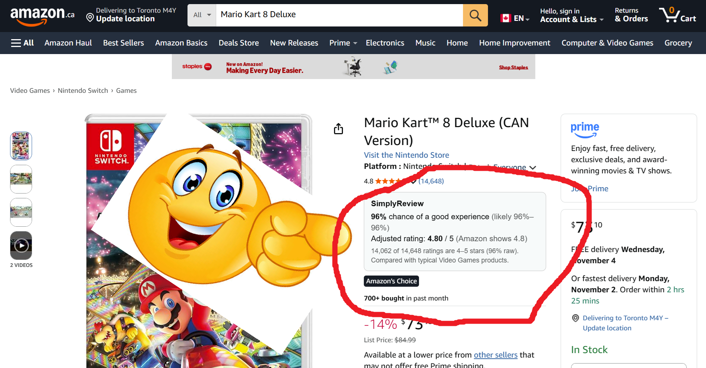

projects
..still updating this page


2026-10-22
TPS planner: where should ambulances wait?
this tool predicts how many paramedic calls each of toronto's 96 postal areas will get in the next 3 hours, then works out where free ambulances should wait so the most calls are within 4 km of one. you pick a date, a time and how many ambulances you have, and the map shows the forecast and where to put them.
how it works: 1.5 million calls from 2021–2025, cleaned and counted by area. the forecast comes from gradient boosting or a small neural network, trained on 2021–2024 and tested on 2025. placement is an optimization model. then i replayed every 3-hour window of 2025 to score each plan against what actually happened.
the result: with the same 10 ambulances, the optimizer reached 87.8% of calls vs 75.8% for a simple rule.
used: python, pandas, scikit-learn, pytorch, scipy, streamlit, plotly. data from city of toronto open data and statistics canada.
2026-11-01
SimplyReview: a more honest amazon rating
SimplyReview is a chrome extension that re-scores amazon ratings with bayes' theorem, so a product with 3 perfect reviews doesn't beat one with 14,000 great ones. it shows the chance of a good experience (4–5 stars) with a range like "likely 76–98%", plus an adjusted star rating.
how it works: it reads the star breakdown and category from the page, adds a few "pretend reviews" that look like a typical product in that category, and works out the range from a beta distribution. it all runs in the browser. inspired by 3blue1brown's video on probabilities of probabilities.
the result: i tested it on 6,095 products from the amazon reviews 2023 dataset. from each product's first 10 reviews, it predicted the long-run star rating with 27–29% less error than the raw average (beauty, appliances, video games).
why: some products are just slop & im tired
used: javascript, python, pandas. data from mcauley lab's amazon reviews 2023.